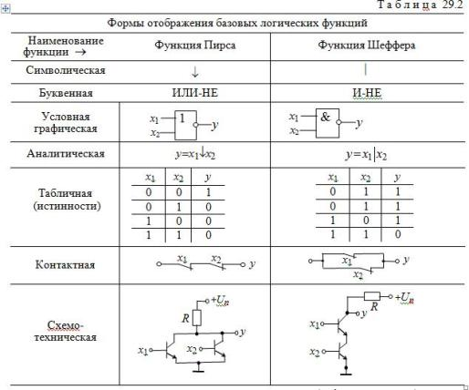

3. БАЗОВЫЕ ЛОГИЧЕСКИЕ ЭЛЕМЕНТЫ
Особое значение в цифровой электронике имеют универсальные (базовые) логические элементы, способные образовать функционально полный набор, с помощью которых можно реализовать синтез устройств любой сложности. При интегральной технологии удобство изготовления одного базового элемента имеет решающее значение. Поэтому базовые логические устройства составляют основу большинства цифровых ИМС.
К универсальным логическим операциям (устройствам) относят две разновидности базовых элементов:
• функцию Пирса, обозначаемую символически вертикальной стрелкой (стрелка Пирса) и отображающую операцию ИЛИ-НЕ. Для простейшей функции двух переменных х1 и х2 функция y = 1 тогда и только тогда, когда х1 = х2 = 0:
y = х1 х2=¬(х1+х2)
• функцию Шеффера, обозначаемую символически вертикальной черточкой |(штрих Шеффера) и отображающую операцию И-НЕ. Для простейшей функции двух переменных х1 и х2 функция y = 1 тогда и только тогда, когда х1 = х2 = 1:
y = х1 |х2=¬(х1х2)

При одних и тех же значениях аргументов обе функции отображают операцию инверсии. Важнейшие показатели функций Шеффера и Пирса представлены в табл. 29.2.
В последней строке табл. 29.2 приведены примеры построения двухвходовой схемы ИЛИ-НЕ, в которой к нагрузочному резистору R подключены коллекторы двух параллельно включенных биполярных транзисторов р-п-р-типа, эмиттеры которых заземлены, и схемы И-НЕ, в которой последовательно включены два биполярных транзистора р-п-р-типа (эмиттер нижнего транзистора подключен к земле) и нагрузочный резистор R.